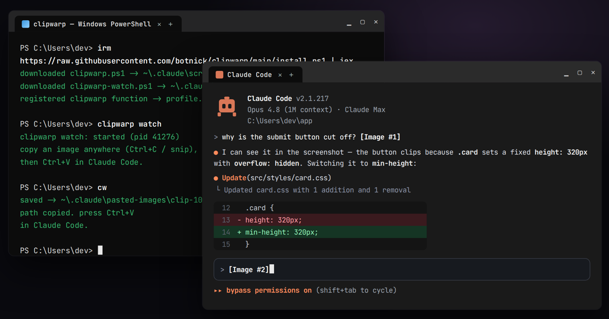

██████╗██╗ ██╗██████╗ ██╗ ██╗ █████╗ ██████╗ ██████╗
██╔════╝██║ ██║██╔══██╗██║ ██║██╔══██╗██╔══██╗██╔══██╗
██║ ██║ ██║██████╔╝██║ █╗ ██║███████║██████╔╝██████╔╝
██║ ██║ ██║██╔═══╝ ██║███╗██║██╔══██║██╔══██╗██╔═══╝
╚██████╗███████╗██║██║ ╚███╔███╔╝██║ ██║██║ ██║██║
╚═════╝╚══════╝╚═╝╚═╝ ╚══╝╚══╝ ╚═╝ ╚═╝╚═╝ ╚═╝╚═╝
A copied screenshot rides the warp line straight into Claude Code on Windows. Press Ctrl+V — it attaches.สกรีนช็อตที่ก๊อปวิ่งไปตามสายวาร์ปเข้า Claude Code บน Windows กด Ctrl+V แล้วแนบเลย
● image attached
Copy → Warp → Pasteก๊อป → วาร์ป → วาง
clipwarp watches your clipboard. When an image boards, it saves a PNG and puts that file's path on the clipboard as text — the form Claude Code accepts.clipwarp คอยดู clipboard พอมีรูปขึ้นมา มันเซฟเป็น PNG แล้ววาง path ของไฟล์ลง clipboard เป็นข้อความ ซึ่งเป็นรูปแบบที่ Claude Code รับได้
Copy any imageก๊อปรูปอะไรก็ได้
Win+Shift+S, Snipping Tool, Lightshot, ShareX, or Copy image in a browser.Win+Shift+S, Snipping Tool, Lightshot, ShareX หรือ Copy image ในเบราว์เซอร์
clipwarp warps itclipwarp วาร์ปให้
It saves a PNG and swaps the clipboard to its path — automatically, in the background.เซฟ PNG แล้วสลับ clipboard เป็น path ให้อัตโนมัติเบื้องหลัง
Ctrl+V in Claude CodeCtrl+V ใน Claude Code
Press paste and the screenshot attaches. No extra steps.กดวางแล้วรูปแนบเลย ไม่มีขั้นตอนเพิ่ม
A real terminal, a real pasteเทอร์มินัลจริง วางรูปจริง

Reads every clipboard formatอ่านได้ทุกฟอร์แมต clipboard
Everything you can typeคำสั่งทั้งหมด
clipwarp watchStart the background auto-converter.เริ่มตัวแปลงอัตโนมัติเบื้องหลังclipwarp autostartStart the watcher automatically at every login.ให้ watcher เริ่มเองทุกครั้งที่ล็อกอินclipwarp statusIs the watcher running? Is autostart on?watcher ทำงานอยู่ไหม autostart เปิดไหมclipwarp stopStop the watcher.หยุด watcherclipwarp unautostartRemove the login autostart.เอา autostart ตอนล็อกอินออกcwShort alias — convert once, then Ctrl+V.ตัวย่อ — แปลงครั้งเดียว แล้ว Ctrl+VAdvisory — close the line when off dutyคำเตือน — ปิดสายเมื่อเลิกใช้
While the watcher runs, every copied image also carries its file path as text. So when you paste:ตอน watcher ทำงาน ทุกครั้งที่ก๊อปรูปจะมี path ติดไปด้วย เวลาวางจึงเป็นแบบนี้
- OKApps that accept images (Claude Code, Word, Discord) paste the image, as normal.แอปที่รับรูปได้ (Claude Code, Word, Discord) วางเป็นรูปปกติ
- !!Plain text boxes get the path instead, e.g.
C:\Users\…\clip-….pngช่องที่รับแค่ข้อความจะได้ path มาแทน เช่นC:\Users\…\clip-….png
Done with Claude Code? Run clipwarp stop, and clipwarp unautostart so it won't start at login.เลิกใช้ Claude Code แล้ว? รัน clipwarp stop และ clipwarp unautostart เพื่อไม่ให้เปิดเองตอนล็อกอิน
Questions & answersคำถามที่พบบ่อย
Why doesn't Ctrl+V image paste work in Claude Code on Windows?ทำไม Ctrl+V วางรูปใน Claude Code บน Windows ไม่ได้
Alt+V is WSL-only. Pasting a file path as text is the reliable route — clipwarp automates it.ตัว UI เทอร์มินัลของ Claude Code บน Windows แท้ อ่าน bitmap จาก clipboard ไม่ได้ และ Alt+V ใช้ได้แค่บน WSL วิธีที่เวิร์กคือวาง path เป็นข้อความ — clipwarp ทำให้อัตโนมัติHow do I paste a screenshot into Claude Code?วางสกรีนช็อตลง Claude Code ยังไง
clipwarp watch), take a screenshot with Win+Shift+S, PrtScn, or Lightshot, then press Ctrl+V in Claude Code. Without the watcher, run cw after the screenshot, then Ctrl+V.เปิด watcher ไว้ (clipwarp watch) แล้วจับภาพด้วย Win+Shift+S, PrtScn หรือ Lightshot จากนั้นกด Ctrl+V ใน Claude Code ถ้าไม่เปิด watcher ให้รัน cw หลังจับภาพ แล้ว Ctrl+VDoes it work with WSL?ใช้กับ WSL ได้ไหม
Alt+V usually works. clipwarp targets native Windows — Windows Terminal, PowerShell, cmd, VS Code terminal — where nothing else does.บน WSL ปกติ Alt+V ของ Claude Code ใช้ได้อยู่แล้ว clipwarp ทำมาเพื่อ Windows แท้ — Windows Terminal, PowerShell, cmd, เทอร์มินัล VS CodeIs my screenshot uploaded anywhere?รูปถูกอัปโหลดไปไหนไหม
Board the lineขึ้นสาย
Paste this into PowerShell, then run clipwarp watch. Free and open source, MIT.วางคำสั่งนี้ใน PowerShell แล้วรัน clipwarp watch ฟรีและโอเพนซอร์ส MIT
irm https://raw.githubusercontent.com/botnick/clipwarp/main/install.ps1 | iex